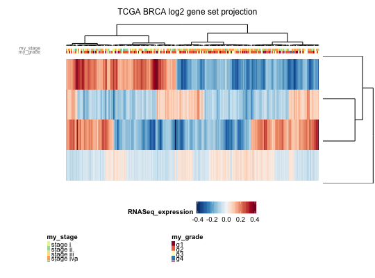

geneSetProjection(dat, pairing, GS, method = c("ks", "logistic", "median", "mean"), collapse = T, weighted = T, absolute = F, min.gset = 5, verbose = T)
geneSetProjection map a gene-level dataset to a
geneset-level dataset based on control-treatment pairing (i.e., the
ks score is done with respect to the 'control vs. treatment'
phenotype). This function is ideal for 'time-series' data of
response to treatment, where for each time point there are several
replicates for both the control and the treated.
The format of 'pairing' is a list of lists (of sample names), of the form:
list(group1=list(control=c(s_111,..,s_11n),treatment=c(s_121,..,s_12n)), group2=list(control=c(s_211,..,s_21n),treatment=c(s_221,..,s_22n)), ...)
And the output ExpressionSet will have as many columns as either the number of groups (if collapse=TRUE), or the number of samples across all treatment groups (if collapse=FALSE)
# the very basic steps are: # 1) load the data (expression and genesets) # 2) rename the dataset by replacing probesetIDs by gene symbols ==> DB # 3) create the list of lists pairing ==> PAIRS # 4) run geneSetProjection(dat=DB,pairing=PAIRS,gset.db=GSET, ...) ## 1) LOAD the data ## data(gspData) if (is.null(gsp.eSet)) stop("is.null(gsp.eSet)") if (is.null(gsp.GeneSet)) stop("is.null(gsp.GeneSet)") ## 2) RENAME the dataset rows (w/ gene symbols) ## DAT1 <- gsp.eSet[fData(gsp.eSet)[,"symbol"]!="",] featureNames(DAT1) <- toupper(fData(DAT1)[,"symbol"]) ## 3) CREATE the list of lists pairing (one group only) ## ANidx <- pData(DAT1)[,"tissue_type"]=="AN" PAIRS <- list(OSCC=list(control=sampleNames(DAT1)[ANidx], treatment=sampleNames(DAT1)[!ANidx])) ## 4) RUN geneSetProjection .. ## GSPdir <- geneSetProjection(dat=DAT1, pairing=PAIRS, GS=gsp.GeneSet, collapse=FALSE, # single-sample projection weighted=FALSE, # standard KS score, no weighting absolute=FALSE, # keep sign of enrichment scores min.gset=5, verbose=TRUE)Projecting 1 groups .. > group OSCC .. [ 31 / 315 ] Checking genesets .. done.gradeID <- 'my_grade' stageID <- 'my_stage' p2 <- heatmap.ggplot2(eSet=GSPdir,col.clust=TRUE,row.clust=TRUE, col.lab=c(gradeID,stageID),row.lab="", heatmap.y.text=FALSE, heatmap.x.text=FALSE, heatmap.colorlegend.name="RNASeq_expression", title.text="TCGA BRCA log2 gene set projection", col.legend.name=c(gradeID,stageID), row.legend.name="", row.scaling="none",z.norm=FALSE, cuttree.col=0, cuttree.row=0, verbose=FALSE, show=TRUE) p2